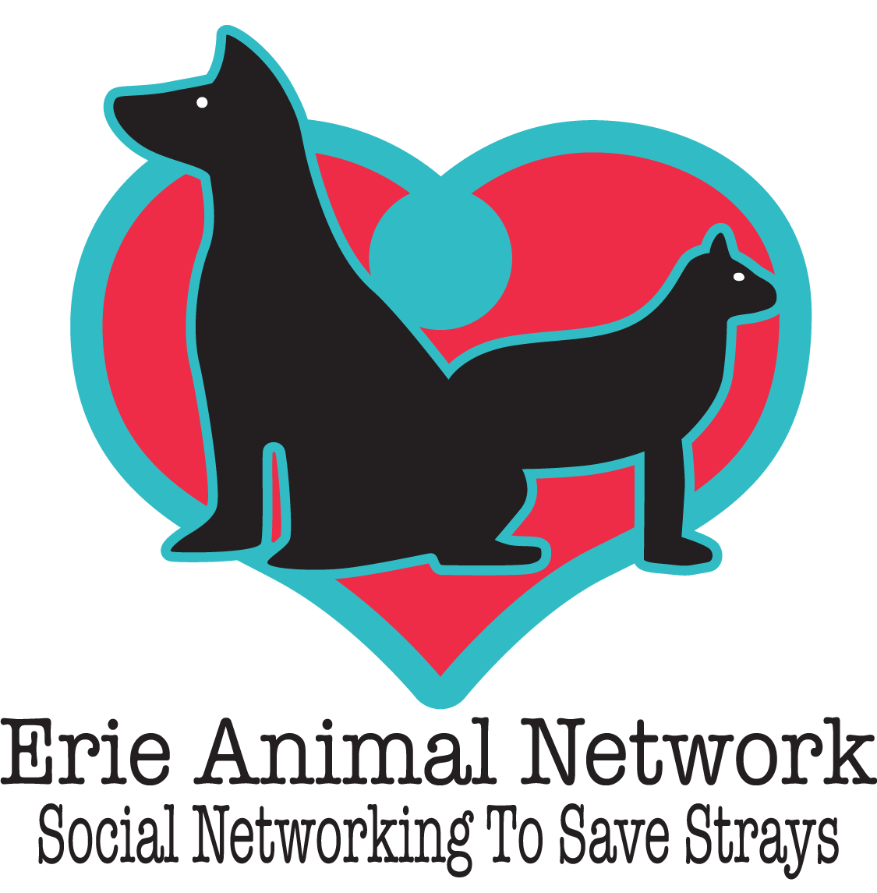
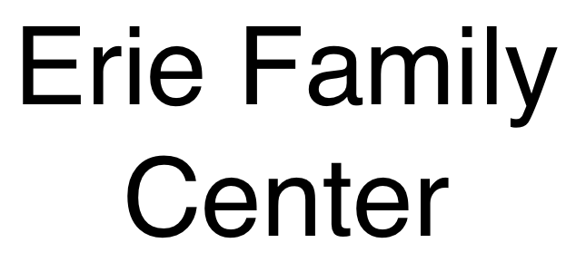
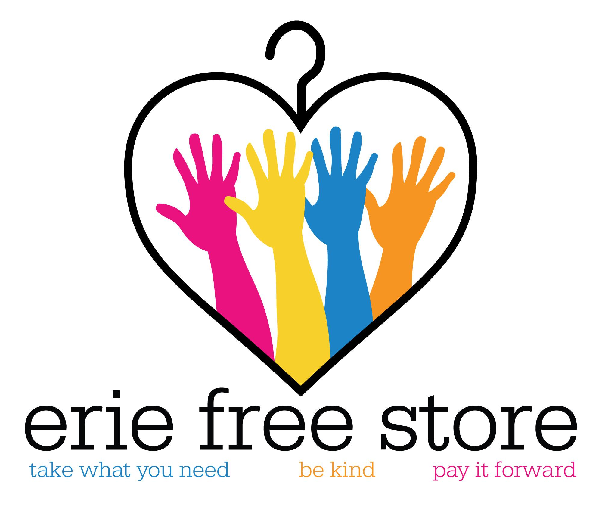

Accepted for donation:
Household Items:
Towels, blankets, no sheets, cleaning supplies, washcloths, and hand towels.
Pet Supplies:
Dog and cat beds that are clean and in good condition, cat toys in good condition, genly used clean leashes and collars for cats and dogs, and dog and cat food (opened or unopened).
Location:
1555 East 10th StreetErie, PA 16511
Phone: 814-451-0230
Go to the website

Accepted for donation:
Clothing:
Men's, women's, and children's clothing.
Household Items:
Small household goods such as dishes, pots and pans, small appliances, towels, sheets, curtains, and toys. Essentially things that you would need to start up in an apartment.
NO furniture and No large appliances.
Location:
254 East 10th StreetErie, PA 16503
Phone: 814-456-6254
Go to the website

Accepted for donation:
Clothing:
Gently used clothing for men, women, and children.
Household Items:
Essentially accepts items that one would need in setting up an apartment. Average size furniture such as couches, chairs, tables, dressers, housewares such as dishes, and pots and pans.
No knick knacks.
Call 814-456-2091 to schedule pickup for furniture
Location:
329 West 10th StreetErie, PA 16502
Phone: 814-456-2091
Go to the website

Accepted for donation:
Miscellaneous:
Journals, adult coloring books, gel pens, colored pencils, crayola crayons, and acrylic paints, relaxing music CDs for adults and kids.
Location:
125 West 18th St.Erie, PA 16501
Phone: 814-455-9414
Hours: 8:30-4:30 M-F
Go to the website

Accepted for donation:
Clothing:
Gently used, nearly-new professional women's clothing including: interview appropriate suits and blouses, professional separates including blouses, slacks, skirts, dresses, blazers and jackets, new or gently used scrubs, work appropriate dress shoes, flats and heels, safety non-skid shoes and sneakers, handbags, briefcases, and portfolios. No formal wear.
Location:
1051 East 28th St.Erie, PA 16504
Phone: 814-456-0733
Please call to arrange donation before drop-off
Hours: M-F 8:00am-4:00pm
Go to the website

Accepted for donation:
Household Items:
Basic furniture to transition homeless veterans into housing, especially beds, dressers, tables and chairs. One day per month, large donations may be picked up. Please call ahead to schedule.
Location:
3823 West 12th St., Suite 9Erie, PA 16505
Phone: 814-392-4937
Go to the website

Accepted for donation:
Pet Supplies:
Wet, dry, or canned cat and dog food that is made-in-the-USA
Cat and dog treats and biscuits
Cleaning supplies such as wipes, Swiffer pads, paper towels, and pet-safe cleaning solutions.
Locations:
1831 W. 26th St.Erie, PA 16508
Can be accepted on Wed. 3pm-7pm and Sat., Sun. 11am-3pm
5148 Peach St. (Inside Erie Pack and Ship Store)
Erie, PA 16509
Can be accepted Monday-Friday 9am-6pm, Saturday 9am-1pm
Go to the website

Accepted for donation:
Pet Supplies:
Metal dog crates (36"-46"), exercise pens, newspaper, ceramic food and water bowls, plastic litter boxes, medium sized boxes, apple sticks/apple branches, pet carriers, cat tunnels, cleaning supplies, disposable gloves, heavy duty trash bags.
Location:
2316 W. 38th StreetErie, PA 16506
Phone: 814-881-7243
Go to the website

Accepted for donation:
Clothing:
Gently used clothing
Household Items:
Furniture and small household items.
Will pick up larger items. Schedule for a pickup.
Location:
2064 West 16th StreetErie, PA 16505
Phone: 814-452-4421
Go to the website

Accepted for donation:
Household Items:
Gently used small home appliances, microwaves, vacuum cleaners, coffee pots, crock pots, household items such as: clean sheets and linens, towels, glasses, dishes, silverware, pots and pans, baking pans, cleaning supplies, art supplies. Do NOT accept large appliances or large furniture.
Location:
2549 West 8th StreetErie, PA 16505
Phone: 814-453-5921
Go to the website

Accepted for donation:
Clothing:
Winter hats, gloves, coats and boots for children, new shoes for school aged children.
Household Items:
New baby supplies such as diapers, wipes, bottles, toys, cleaning supplies to give to families, etc.
Location:
913 Payne AveErie, PA 16503
Phone: 814-874-6990

Accepted for donation:
Clothing:
Men's, women's, and children's clothing.
Household Items:
Small household goods such as dishes, pots and pans, small appliances, towels, sheets, curtains, and toys--essentially things that you would need to start up in an apartment. NO furniture and NO large appliances.
Location:
2816 Elmwood AvenueErie, PA 16508
Phone: 814-864-4809
Visit the Facebook Page

Accepted for donation:
Miscellaneous:
Balloons, umbrellas, white socks, large clear storage containers, large coolers, body spray/perfume/cologne, chalk, magazines without staples, paper towel/cardboard tubes, phone books, sheets, towels, T-shirts, window markers, opened pine cones, wrapping paper, streamers, tissue paper, rubber ducks, paper plates, cups, and bowls, fleece blankets, radio/CD players, digital camera, washable children's paint, art paper, dry erase markers, art canvas, card stock, paint brushes, all sizes of Animal Air kennels, small animal critter keepers, animal food and water bowls, sharpie markers, flashlights, glue sticks, white glue, bubbles, empty printer cartridges, baby toys, small mammal toys, bird toys, and KONGs.
Location:
423 West 38th StreetErie, PA 16508
Phone: 814-864-4091
Go to the website

Accepted for donation:
Clothing:
Clothing, shoes, and wedding gowns.
Household Items:
Housewares such as dishes, pots and pans, etc., small appliances, upholstered furniture with no rips, tears or stains, and bed linens, comforters.
Miscellaneous:
Books and purses.
Do NOT accept TV's or large appliances.
Location:
2601 West 26th StreetErie, PA 16506
814-833-4501
and
Summit Towne Center
7200 Peach Street, Unit #500
Erie, PA 16509
814-866-4762
Go to the website

Accepted for donation:
Household Items:
Building materials, household items such as un-upholstered furniture, dishes, appliances in good working condition, kitchen and bathroom cabinets, kitchen and bathroom fixtures, sinks, doors, full cans of paint (opened or unopened), and essentially anything a person would need to start up in a new home.
Can pick up larger items locally.
Location:
413 East 9th StreetErie, PA 16503
Phone: (814)-454-7025
Go to the website

Accepted for donation:
Pet Supplies:
Hooves/antlers/kongs/pipe bones, heavy duty toys, jolly balls, cat toys, small training treats, grain-free dog/puppy food, puppy food (without red dye in it), kitten food, cat food. New or used: blankets, comforters, dog beds, cat beds, XXL dog crates, puppy play pens, Martingale collars, buckle collars, heavy duty soccer balls/basketballs/footballs, outdoor play yard items (such as Little Tykes), water/food buckets (heavy duty plastic with handle), chain link fence, straw.
Donation drop-off sites:
Critter Camp and Cuts32708 Forest Home Rd.
Union City, PA 16438
Bovas Hardware
307 Main St.
Spartansburg, PA 16509
Mud Puppies
3867 Peach St.
Erie, PA 16509
Wheezies Kove
4887 Buffalo Rd.
Erie, PA 16510
Pattis Pizza
3403 West 38th St.
Erie, PA 16506
State Farm Cam El Farouki's Office
3319 West 26th St.
Erie, PA 16506

Accepted for donation:
Pet Supplies:
Unopened dog and cat food, gently used and clean leashes and collars, leaders, harnesses, new and gently used dog/cat toys, tennis balls, dog/cat water and food bowls, cat litter, dog/cat beds, gently used wire crates and carriers, gently used towels and blankets, office and craft supplies, used inkjet printer cartridges for recycling, used t-shirts, fleece, and children's socks.
Location:
2407 Zimmerly RoadErie, PA 16506
Phone: 814-835-8331
Go to the website

Accepted for donation:
Clothing:
Large and extra large shirts and pants, underwear, plain t-shirts, socks, sweatpants, sweatshirts, men's and women's jeans, thermal underwear, winter jackets, hats, and gloves.
Household Items:
Blankets, towels, hygiene items, wash rags, cots, combs and hair brushes, sleeping bags, and book bags.
There is a desperate need for good operational used laptops.
Location:
1101 Peach St.Erie, PA 16501-1839
Phone: 814-452-4462 ext. 100
Hours: M-F 8:30am-3:30pm
Go to the website

Accepted for donation:
Clothing:
Clean, gently used, and seasonally appropriate women's clothing and shoes, children's clothing and shoes.
Household Items:
Household items such as dishes and pots and pans.
Location:
1039 East 27th StreetErie, PA 16504
Phone: 814-455-4577
Go to the website

Accepted for donation:
Miscellaneous:
All instruments of any value.
The only instruments not accepted are old pianos (that weigh a ton).
Location:
2501 West 12th St. #290Erie, PA 16505
Phone: 814-873-4500
Go to the website
Twitter: @Music4Veterans
Facebook: @MusicForVetsErie

Accepted for donation:
Pet Supplies:
Towels, small blankets that are easy to wash, cat toys, small scratching posts, cat carriers, cat litter, cat food -- opened or unopened, canned special cat food, vacuum cleaners, animal-safe cleaning supplies, bleach, baking soda, garbage bags (especially industrial size), latex gloves (size large), paper towels, toilet paper, dishwashing soap, laundry detergent.
Donations accepted on Monday, Thursday, and Friday from 1-5pm
Saturday and Sunday from 1-4pm
Location:
5439 West Lake Rd.Erie, PA 16505
Phone: 814-746-0511
Go to the website

Accepted for donation:
Clothing:
Clothing, school uniforms, and shoes/boots.
Household Items:
Housewares and blankets.
Miscellaneous:
Seasonal items and books.
Most good quality items.
Location:
1516 Buffalo RoadErie, PA 16510-1002
Phone: 814-453-4080
Go to the website

Accepted for donation:
Clothing:
New school uniforms, sleepwear and sweat suits.
Household Items:
Furniture in good condition, especially dressers with drawers, single beds, single mattresses, single sheets, pillows, towel sets, tables and chairs, household items, kitchen cookware and utensils, sets of dishes and glasses, kitchen towels, bookcases, new toiletry and baby supplies, diapers, formula, and baby furniture.
Miscellaneous:
New toys, books, art supplies, gently used Little Tikes toys, used and broken cell phones.
Location:
1702 French StreetErie, PA 16501
Phone: 814-455-1774 ext. 227
Call Project Connect to schedule a pick-up of all donated items.
Fax: 814-314-1506
Go to the website

Accepted for donation:
Clothing:
Women's, men's, and children's clothing, and men's suits.
Household Items:
Appliances in working order, furniture, household goods, and sofas.
Miscellaneous:
Working computer systems, books, and toys.
Location:
Three Locations:
1209 Sassafras Street
Erie, PA 16502
814-456-4237
1944 Keystone Drive
Erie, PA 16509
814-866-1787
1022 Liberty Street
Erie, PA 16502
814-454-6497
Go to the website

Accepted for donation:
Food:
Non-perishable foods and perishable foods such as extra produce from your garden, farm, or orchard (no donation is too small).
Venison during hunting season is accepted; however, the deer must be taken to:
Pacileo's Great Lakes Deer Processing at 8890 Wattsburg Rd., Erie, PA 16509 (814-825-3759) OR
McDonald Meats, Inc,. 10445 Ridge Road, Girard, PA 16417 (814-774-3507).
They will process the meat and distribute it to food banks in need of meat.
Location:
1507 Grimm DriveErie, PA 16501
Phone: 814-459-3663
Go to the website

Accepted for donation:
Miscellaneous:
Gently used eyeglasses.
Location:
2545 West 26th StreetErie, PA 16506
Phone: 814-455-0995
Go to the website

Accepted for donation:
Food:
Non-perishable foods and after-school snacks for children (non-perishable, sealed packaging).
Household Items:
Personal hygeine items, toilet paper, paper towels, and diapers.
Clothing:
School uniforms.
Miscellaneous:
Used bikes in good condition (April through August).
Location:
425 West 18th St.Erie, PA 16502
Phone: 814-454-7814
Hours: Monday - Thursday: 9:00am - 4:00 pm
Friday: 9:00am - 12:00pm

Accepted for donation:
Clothing:
New or gently used men's, women's, and children's clothing, belts, wallets, and shoes.
Location:
1701 Parade StreetErie, PA 16503
Phone: 814-452-6113
Go to the website

Accepted for donation:
Clothing:
Gently used men's, women's, and children's clothing including: t-shirts, underwear, socks, shoes, belts, coats, hats, mittens and gloves.
Miscellaneous:
Gently used boardgames.
Location:
1024 Peach StreetErie, PA 16501
Phone: 814-459-6315 or 814-459-6316
Go to the website
Goal
The purpose of this website is to aid the citizens of Erie and the surrounding areas in finding charities that are in need of used items that people wish to give away. This site does not deal with monetary donations. By donating our "treasures" to these charitable organizations, we are helping each other in Erie and we are keeping unnecessary items out of our landfills. While this site lists specific charitable organizations, it does not endorse any particular organization. Any charitable organization may request changes to the list of acceptable items for donation or may request to be added or removed from this site. The site administrator may be contacted by e-mail at: eriedonations@gmail.com.